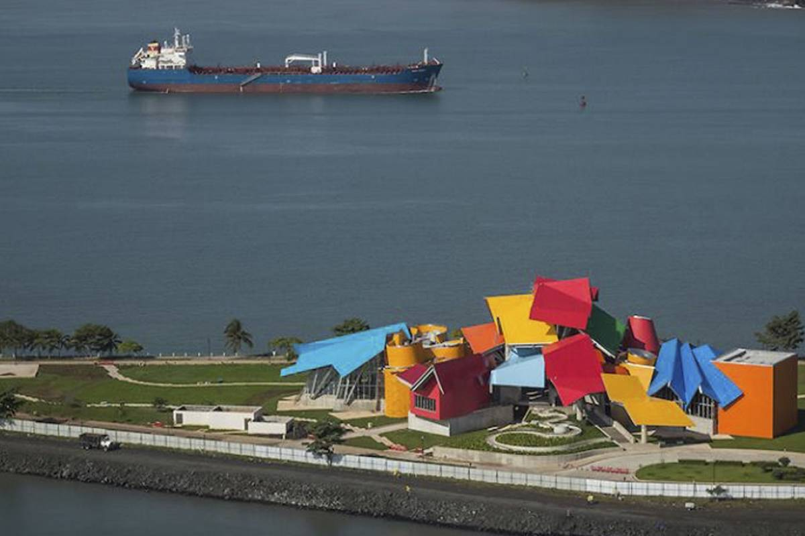

A 20 kilómetros hasta Amador y a unos 40 minutos en lancha se encuentra la isla que te recibe con vistosas flores de colores, característica que la ha bautizado como la Isla de las Flores, aunque en realidad su nombre es Isla Taboga. Esta zona es perfecta para pasar un día alejado de la ajetreada rutina y disfrutar de los increíbles atractivos naturales de Panamá. La variedad de sitios históricos a conocer en esta isla es amplia. Isla de las Flores ha albergado en su seno mucha de la historia y cultura panameña: conquistadores, soldados, escritores y hasta la primera santa del continente, pero sin duda lo que más llama la atención de ella son sus playas. |
 |
Si vas de vacaciones a Panamá, vale la pena conocer Bocas del Toro, un archipiélago rodeado de islas, isletas y cayos que proporcionan un sinfín de actividades para aquellos que se aventuren a explorarlo. Te agradarán sus extensas playas donde el buceo y el surf son las actividades reinantes, y sus distintos parques ecológicos. En la Isla Colon podrás encontrar hotelería para tu estadía al igual que en otras partes del archipiélago. En la Isla Bastimentos podrás avistar delfines y en Bocas Town es donde la mayoría de los locales nocturnos se encuentran, así que al visitar Bocas del Toro puedes estar seguro de que no te aburrirás, ya que es uno de los mejores lugares recreativos en Panamá.
|
 |
Hace tres millones de años Panamá no existía. Esta es la razón principal para que te pasees su Biomuseo, una joya arquitectónica y educacional en el que descubrirás cómo fue que se creó el istmo panameño llamado el Puente de las Américas. Este es uno de los sitios para conocer de Panamá en el que encontrarás ocho galerías donde vivirás una explicación sensorial de cómo convive la biodiversidad en estas tierras ricas en diferentes ecosistemas. Aparte de sus exhibiciones permanentes posee una sala temporal en la que ubican exposiciones interesantes de muestras arqueológicas. De igual forma en el recinto podrás conseguir un cafetín y una tienda de souvenirs para que recuerdes tu paso por el Biomuseo de Panamá. |
 |